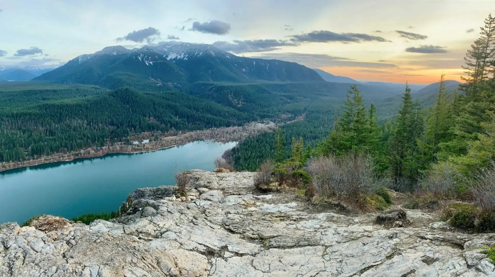
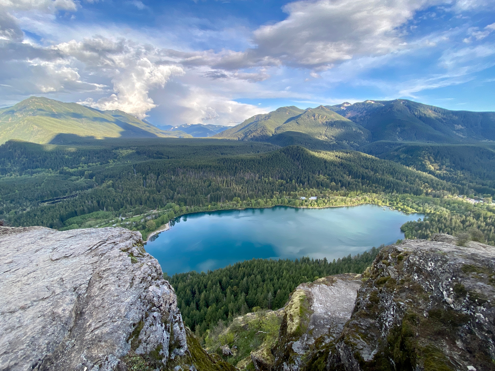

A Journey Through Nature's Splendor
This is a brief introduction to the Rattlesnake Ledges hike...
This is a fine hike on a well maintained, albeit busy trail through the forest with views of the Cedar River watershed, Mount Si, Mount Washington, Rattlesnake Lake and Chester Morse Lake.

